中信银行深圳分行


邀请函
深圳福田
2018.4.14
2018.4.14
尊敬的先生/女士：
您好！
我们热忱邀请您参加中信银行深圳分行2018二季度投资策略报告会。
新时代，新思想，新周期，在确定性的政治经济格局下，如何乘势而起，攀登投资险峰？中信保诚基金为您揭开量化投资的奥秘，呈现趋势投资和价值投资的魅力，拨开理财迷雾，把握投资机遇，我们为您呈现投资理财的康庄大道。
新时代，新思想，新周期，在确定性的政治经济格局下，如何乘势而起，攀登投资险峰？中信保诚基金为您揭开量化投资的奥秘，呈现趋势投资和价值投资的魅力，拨开理财迷雾，把握投资机遇，我们为您呈现投资理财的康庄大道。
谨此，诚邀您拨冗出席。
感谢您的支持！
感谢您的支持！
中信银行深圳分行
中信保诚基金
2018-4
中信保诚基金
2018-4
主讲嘉宾 杨旭
中信保诚基金量化投资部副总监
哥伦比亚大学数学金融硕士、运筹管理学硕士，纽约大学化学硕士，8年证券、基金从业经验；入行于雷曼信用交易部，从事信用衍生品分析；现任信诚新悦回报、信诚至裕、信诚中证500、信诚沪深300等指数基金的基金经理。
擅长组合投资管理，宏观对冲，衍生品与结构化产品投资。
擅长组合投资管理，宏观对冲，衍生品与结构化产品投资。
缪夏美
基金经理
复旦大学经济学硕士。曾任方正中期期货有限公司宏观研究员、国债期货研究员，合众资产管理有限公司债券投资经理助理、债券投资经理,2016年8月加入中信保诚基金管理有限公司担任债券研究员，曾任固定收益部专户投资经理。现任信诚经典优债、信诚惠泽基金经理。
具备深厚的宏观研究功底和完善的宏观框架，擅长宏观分析及大类资产配置。趋势投资和价值投资相结合，重配置轻交易，专注绝对收益。
具备深厚的宏观研究功底和完善的宏观框架，擅长宏观分析及大类资产配置。趋势投资和价值投资相结合，重配置轻交易，专注绝对收益。